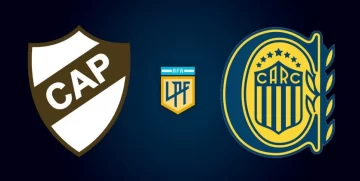

Platense y Rosario Central se enfrentan con realidades opuestas y tensión en el aire.
Este martes desde las 20, el Estadio Ciudad de Vicente López será escenario de un duelo que promete alto voltaje futbolístico y emocional. Platense recibe a Rosario Central por la fecha 13 de la Zona B del Torneo Apertura de la Liga Profesional 2025, en un partido donde ambos equipos llegan con objetivos distintos, pero con la misma urgencia de mostrar carácter en el tramo final de la fase regular.
Por un lado, el “Calamar” aún pelea por asegurar su lugar entre los clasificados a los octavos de final. A pesar del golpe que significó la reciente derrota frente a Deportivo Riestra, el equipo dirigido por Sergio Gómez y Favio Orsi se mantiene en puestos de clasificación y buscará una victoria vital que lo aleje de la zona roja. No será tarea sencilla: Platense contará con cuatro ausencias importantes. Rodrigo Herrera está suspendido, mientras que Gustavo Goñi, Jonathan Bay y Maximiliano Rodríguez siguen fuera por lesión.
En la otra vereda, el “Canalla” ya tiene el boleto asegurado a la siguiente fase y llega entonado tras eliminar a Los Andes en la Copa Argentina. Además, Rosario Central arrastra un invicto de cinco partidos, pero no se conforma: quiere terminar puntero de su grupo para tener la ventaja de definir de local en los octavos.
Sin embargo, la tranquilidad deportiva contrasta con la tensión extrafutbolística que envuelve al club rosarino. La reciente muerte de Juan Domingo Ferreyra, alias “Chicha”, un referente de la barrabrava de Central, sacudió a la institución. Ferreyra fue asesinado por sicarios en la zona sur de Rosario, en un episodio que las autoridades vinculan a una disputa por el liderazgo de la hinchada. El crimen, aún sin esclarecimiento, mantiene en vilo a la dirigencia y genera un clima espeso alrededor del plantel.
A esto se suma un conflicto interno que dejó fuera del equipo a uno de los jugadores más determinantes: Jaminton Campaz. El colombiano no fue convocado por decisión dirigencial, en medio de una negociación contractual tensa por temas económicos. Mientras desde la dirigencia aseguran que la exclusión responde a exigencias salariales excesivas, el entorno del jugador sostiene que está en óptimas condiciones físicas y que la decisión es puramente política.
Con ese marco, el duelo en Vicente López se carga de condimentos: Platense se juega mucho más que tres puntos y Central, aunque ya clasificado, necesita mantener el enfoque en medio del caos institucional. El árbitro Pablo Echavarría tendrá la difícil tarea de mantener el orden en un encuentro que puede marcar un antes y un después para ambos equipos
Juan Pablo Cozzani; Juan Ignacio Saborido, Ignacio Vázquez, Oscar Salomón, Raúl Lozano; Leonel Picco, Santiago Toloza; Guido Mainero, Vicente Taborda; Ronaldo Martínez, Augusto Lotti.
DTs: Sergio Gómez y Favio Orsi.
Jorge Broun; Emanuel Coronel, Facundo Mallo, Carlos Quintana, Agustín Sández; Federico Navarro, Franco Ibarra; Gaspar Duarte o Santiago López, Santiago Segovia o Ignacio Malcorra, Lautaro Giaccone; Enzo Copetti.
DT: Ariel Holan.